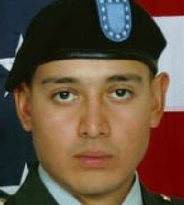
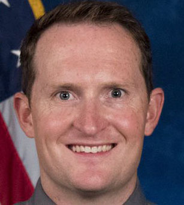
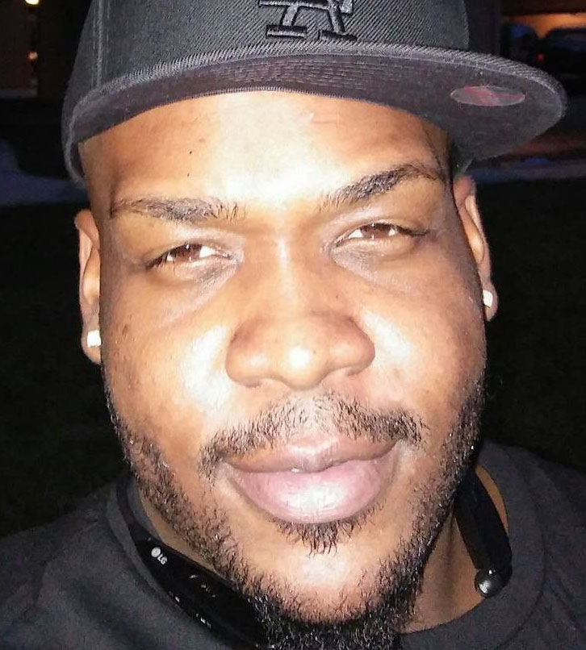
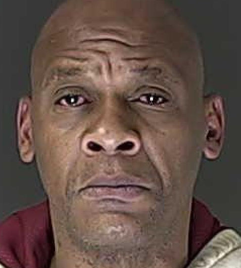
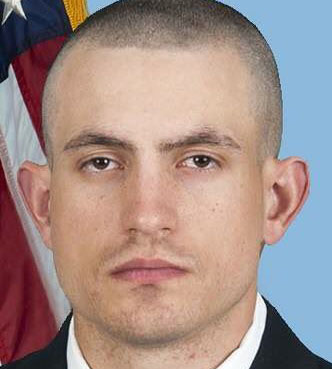
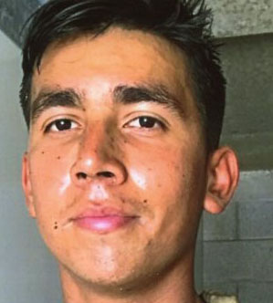

2018 Homicide Victims in El Paso County
2018 was El Paso County’s deadliest year for homicides, with 49 people losing their lives in a historic number of stabbings, shootings or other traumatic ends. Thirty-eight of the deaths occurred within Colorado Springs — a city record — with nine in the county and two in Fountain. The next closest death toll is 44 killings reported in 2013. Read the full story
Benjamin Lee Sharkey, 30, was fatally shot on Jan. 7, 2018. Arquinn DeAndre Stafford was convicted of second-degree murder. Read story
Benjamin Lee Sharkey, 30

Shawnee Tapia, 35, was fatally shot outside of Astro Liquors on Jan. 7, 2018 after what may have been a road rage incident. Charles Valentino Lobato is arrested on suspicion of first-degree murder. Read the story
Shawnee Antonio Tapia, 35
Jerwarren Donterious Jackson, 23, was fatally stabbed by his girlfriend on Jan. 17, 2018 amid a fight over suspected infidelity. Ta Tyana Marie King was sentenced to 18 years in prison for second-degree murder. Read the story
Jerwarren Jackson, 23

Micah Lee Flick, 34, was fatally shot in a shootout with suspected car thief Manuel Zetina on Feb. 5, 2018. Zetina also was killed. Read the story
Micah Lee Flick, 34

Manuel Zetina, 19, was fatally shot by Colorado Springs police and El Paso County Sheriff's deputies on Feb. 5, 2018 after he shot and killed Deputy Micah Flick. His shooting death was ruled justified. Read the story
Manuel Zetina, 19

Darryl Tyrone Clark, 33, was fatally shot in the head on March 4, 2018 while staying at a home at 915 Yuma Street. Adonis Ondrae Anderson was initially arrested on suspicion of first-degree murder but released. Police say all individuals involved are accounted for and charging decisions are pending. Read the story
Darryl Tyrone Clark, 33
Corky Lee Oliver, 31, was fatally shot by police after holding his girlfriend hostage in a hotel room on March 12, 2018. The shooting was ruled justified. Read the story
Corky Lee Oliver, 31
Michael David Porter, 53, was fatally shot in the head eight times on March 20, 2018 at his home in Fountain. His son, David Porter, is arrested on suspicion of first-degree murder. Read the story
Michael David Porter, 53
Earnest Gene Ramsey, 39, was fatally shot on April 13, 2018 during a dispute with another man living in his apartment. No charges were filed in the shooting, which was suspected to be in self-defense. Read the story
Earnest Gene Ramsey II, 39
Larry and Pamela Nelson, 72 and 70 respectively, were found dead on April 14, 2018 in their 13540 Hobby Horse Lane home. The deaths remain unsolved. Read the story
Larry Nelson, 72

Pamela and Larry Nelson, 72 and 70 respectively, were found dead on April 14, 2018 in their 13540 Hobby Horse Lane home. The deaths remain unsolved. Read the story
Pamela Nelson, 70
Marcus Howard Denton, 20, and Serena Lee Garcia, 21, were reportedly shot to death in what police described to be a marijuana robbery on April 21, 2018 near Bear Creek Park. Nashid Rayon Rivers and Marquis Dantre Hazard were arrested on suspicion of first-degree murder, among others. Read the story
Marcus Howard Denton, 20
Serena Lee Garcia, 21, and Marcus Howard Denton, 20, were reportedly shot to death in what police described to be a marijuana robbery on April 21, 2018 near Bear Creek Park. Nashid Rayon Rivers and Marquis Dantre Hazard were arrested on suspicion of first-degree murder, among others. Read the story
Serena Lee Garcia, 21
Brandie Preciado, a 21-year-old mother of one, was killed on April 22, 2018 in a shooting which also seriously wounded her boyfriend. William Camacho Jr. is arrested on suspicion of first-degree murder, among numerous other charges. Read the story
Brandie Preciado, 21
Jesse Paul Schlegel, 41, was fatally shot by Colorado Springs Police on April 25, 2018 after pointing a gun at a person during a chase after reportedly getting caught trespassing at the closed O'Brien Typesetting & Printing facility. The shooting was ruled justified. Read the story
Jesse Paul Schlegel, 41

Robert Glenn Maples, 50, was shot on April 22 at a Value Inn & Suites and died three days later. David Rhoads is arrested on suspicion of first-degree murder. Read the story
Robert Glenn Maples, 50

Dionte Amon Harris, 22, was fatally shot in an apparent domestic violence-related incident on May 3, 2018. Cortez Lee-Read, Lakela Brasfield and Austin Boyd are arrested on suspicion of first-degree murder. Read the story
Dionte Amon Harris, 22
Richard Paul Martinez, 40, was shot three times outside of the Angry Pirate Bar, but his body was later found five miles away at a Public Storage facility on May 6, 2018. Police say all individuals involved are accounted for and charging decisions are pending. Read the story
Richard Paul Martinez, 40
Marshall Aaron Mitschelen, 17, was shot once in the head in what one witness described as an accidental shooting on May 9, 2018. A 17-year-old boy is arrested on suspicion of manslaughter. Read the story
Marshall Aaron Mitschelen, 17
Derrick Lamont Lawrence Jr. died of three gunshot wounds on June 23, 2018 after a crash. Cedric Jamal Jackson is arrested on suspicion of first-degree murder. Read the story
Derrick Lawrence Jr., 23

Michelle Ann Peters, 41, was fatally shot on July 13, 2018 by her estranged husband, who dressed like a saleswoman to get her to open the door to where she was staying on Galleria Terrace. Mark Christopher Peters is arrested on suspicion of first-degree murder. Read the story
Michelle Ann Peters, 41

Brandon Scott Watkins, 33, died of a stab wound to the chest on July 21, 2018 at the home he shared with his fiance. An investigation could not determine whether he fell on the knife, as his fiance said, or if he was stabbed. No charges were filed. Read the story
Brandon Scott Watkins, 33
Gustavo Del Sol Sanchez, 46, was fatally shot on July 22, 2018 at a home in eastern El Paso County during a suspected marijuana robbery that also injured another man. Terrell Hall and Colin Matthew Kellet are arrested on suspicion of first-degree murder. Read the story
Gustavo Del Sol Sanchez, 46
William Alexander Bacorn, 18, was fatally shot on July 22, 2018 during an encounter with law enforcement related to the earlier killing of Gustavo Del Sol Sanchez. The shooting was ruled justified. Read the story
William Alexander Bacorn, 18
Paul Gannarelli, 77, died of multiple blunt force injuries after a wrong-way crash on Powers Boulevard on July 23, 2018. Nathaniel Stager is accused of first-degree murder, among other charges. Read the story
Paul Gannarelli, 77
Sophia Eliana Fundora, 1, died on Aug. 4, 2018 at Ute Motel in Fountain. The cause of death is pending, but her mother, Lauren Olivia Sierra is arrested on suspicion of child abuse resulting in death. Read the story
Sophia Eliana Fundora, 1
Michael Dewayne Booker, 28, died of a single gunshot wound on Aug. 16, 2018. Davin Carrera is arrested on suspicion of first-degree murder. Read the story
Michael Dewayne Booker, 28
Terrell Cortez Madrid Duran, 30, died of a single gunshot wound on Aug. 27, 2018 in the 1300 block of East Las Animas St. Two juveniles, ages 15 and 17, are arrested on suspicion of first-degree murder. Read the story
Terrell Cortez Madrid Duran, 30
Jordan Anthony Coleman, 18, was fatally shot on Aug. 29, 2018 after an apparent fight near the University of Colorado at Colorado Springs. Micahi Stacy Hughes is arrested on suspicion of first-degree murder. Read the story
Jordan Anthony Coleman, 18
Randol F. Lille was found stabbed to death in Dorchester Park on Aug. 31, 2018, just hours after a non-fatal stabbing. Police say all individuals involved are accounted for and charging decisions are pending. Read the story
Randol F. Lille, 54

Daniel Chamberlain Lehman, a 28-year-old Army Captain, was fatally shot on Sept. 15, 2018 while walking home from a bar on East Costilla Street. Gilberto Chavez Jr. is arrested on suspicion of first-degree murder. Read the story
Daniel Chamberlain Lehman, 28

Sheldon DeEmery King, 33, was fatally shot at 1611 Howard Ave. on Sept. 16, 2018. His apparent landlord, Frank Dillard, 68, also shot himself and died from the injuries two days later. Read the story
Sheldon DeEmery King, 33
Raymond Daniel McCall, 39, was fatally shot on Sept. 18, 2018 at the Pine Creek Village Apartments where he was a maintenance worker. Jeremy DeWayne Jones is arrested on suspicion of first-degree murder. Read the story
Raymond Daniel McCall, 39
Houston Malachai Cookson, 30, was fatally shot on Oct. 6 by a homeowner who said Cookson was standing on his rear patio and was trying to break into the home. No charges were filed. Read the story
Houston Cookson, 30
Kenyatta Vashon Horne, 20, was fatally shot on Oct. 7, 2018 outside a home in Security-Widefield. Beslim Torres-Valle, Wayne TC Sellers, Tyler Lee Wheeler and Kyle Watts are arrested on suspicion of first-degree murder. Read the story
Kenyatta Vashon Horne, 20
Courtney Christine Jackson, 42, was fatally shot on Oct. 9, 2018 in her home in Peyton. Her husband, Thomas Harry Jackson is arrested on suspicion of first-degree murder. Read the story
Courtney Jackson, 42
Judy Smith, 47, was stabbed in the neck on Oct. 26, 2018 while sleeping in her home on Chelton Road. Her son, Lake Smith, 24, is arrested on suspicion of first-degree murder. Read the story
Judy Smith, 47
Jaylon Morgan, 26, was fatally shot on Nov. 1, 2018 after an apparent fight in the UMB parking lot in downtown Colorado Springs. Timothy Key is arrested on suspicion of criminally negligent homicide, among others. Read the story
Jaylon Morgan, 26
The body of Luis Molina, 34, was found with traumatic wounds in a creek bed near 115 Metzler Place. The death remains unsolved. Read the story
Luis Molina, 34
Luis Starkey Chavez, 17, was fatally shot on Nov. 5, 2018 in an apparent robbery. Two 16-year-olds, a boy and a girl, are arrested on suspicion of first-degree murder. Read the story
Luis Starkey Chavez, 17
Jacquiline Wilde, 24, died of a head injury in a dirt bike crash. Pedro Juan Cruz-Quinones is arrested on suspicion of leaving the scene of an accident involving death, vehicular homicide, reckless manslaughter and criminally negligent homicide. Read the story
Jacquiline Wilde, 24
Shakir Cook-Troynel, 23, was fatally shot on Nov. 17, 2018 by a fellow Fort Carson soldier amid an alleged affair. Isaiah Towns is arrested on suspicion of second-degree murder. Read the story
Shakir Cook-Troynel, 23
Candace R. Jones, 35, was fatally shot on Nov. 23, 2018 outside her apartment complex at 3350 Knoll Lane. Her wife, Jamie Crawford, is arrested on suspicion of first-degree murder. Read the story
Candace R. Jones, 35

Cesar Hernandez Diaz, a 25-year-old Army sergeant, was fatally shot on Dec. 1, 2018 at his home in eastern El Paso County in what is being considered an accident. Fellow soldier Isaac James Klippert is arrest on manslaughter. Read the story
Cesar Hernandez Diaz, 25
Patrick Joseph Bustamante, 50, was fatally shot on Dec. 3, 2018 in his apartment. His son, Patrick Orlando Salazar-Bustamante is arrested on suspicion of manslaughter. Read the story
Patrick Bustamante, 50
Nicholas Gabriel Romero, 32, was fatally shot outside of the Windmill Apartment on Dec. 8. Savino Benjamin Anceno and Saphire Nicks are arrested on suspicion of first-degree murder. Read the story
Nicholas Gabriel Romero, 32
Raymond Frank Maez II, 22, was shot in his tent at a homeless camp on Nov. 27, 2018 and died 13 days later. Police say all individuals involved are accounted for and charging decisions are pending. Read the story
Raymond Frank Maez II, 22
Brandon Thomas Coffin, 28, was killed Dec. 14, 2018 on Geiger Boulevard in a shooting in which his younger brother and two friends also were wounded. Tony Lawson is arrested on suspicion of first-degree murder and his son, Zachary Lawson, is arrested on suspicion of felony menacing. Read the story
Brandon Thomas Coffin, 28
Robbie London, 43, was fatally shot on Dec. 20, 2018 outside of the Whitney Young Apartment complex on Delta Drive. The death remains unsolved. Read the story